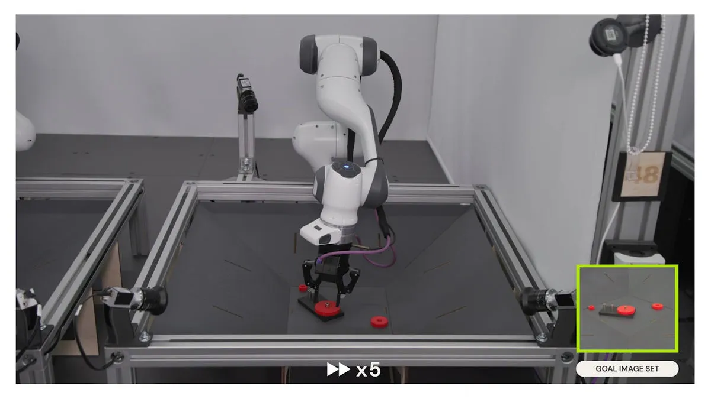

Welcome
The world is increasingly adapting to the changing tides of technology. Even as artificial intelligence continues to make strides across industries, robotics is not far behind. Google DeepMind has just introduced a new dimension to robotics. The latest creation known as RoboCat has the capability to perform various tasks through diverse robotic arms. RoboCat can be categorised as a different league of robotics owing to its unique ability to ‘tackle and adjust’ to various tasks using different types of robots in real-world scenarios. This is something that Google DeepMind claims have never been achieved before in robotics.
src::The Indian Express


What is RoboCat?
Google DeepMind claims RoboCat is a self-improving AI agent for robotics. It learns to perform a wide range of tasks across different arms and then generates new training data on its own to improve itself.
Several researchers in the past have explored robots that can learn to multitask at scale and comprehend large language models along with the real-world capabilities of a helper robot. According to Google DeepMind, RoboCat is the first agent to perform and adapt to multiple tasks and to do the same across different real robots
The company claims that RoboCat learns at a much faster rate than other state-of-the-art models. RoboCat can learn a new task with as few as 100 demonstrations as it draws heavily from a diverse dataset. Google DeepMind claims that this will help in accelerating robotics research as it nearly dissolves human intervention when it comes to training. The company sees it as a step forward in the creation of general-purpose robots.
“The combination of all this training means the latest RoboCat is based on a dataset of millions of trajectories, from both real and simulated robotic arms, including self-generated data. We used four different types of robots and many robotic arms to collect vision-based data representing the tasks RoboCat would be trained to perform,” the company said in its official post.
Thank you for visiting this page
Have a Great day!!
For more information related to the article visit this : The Indian Express